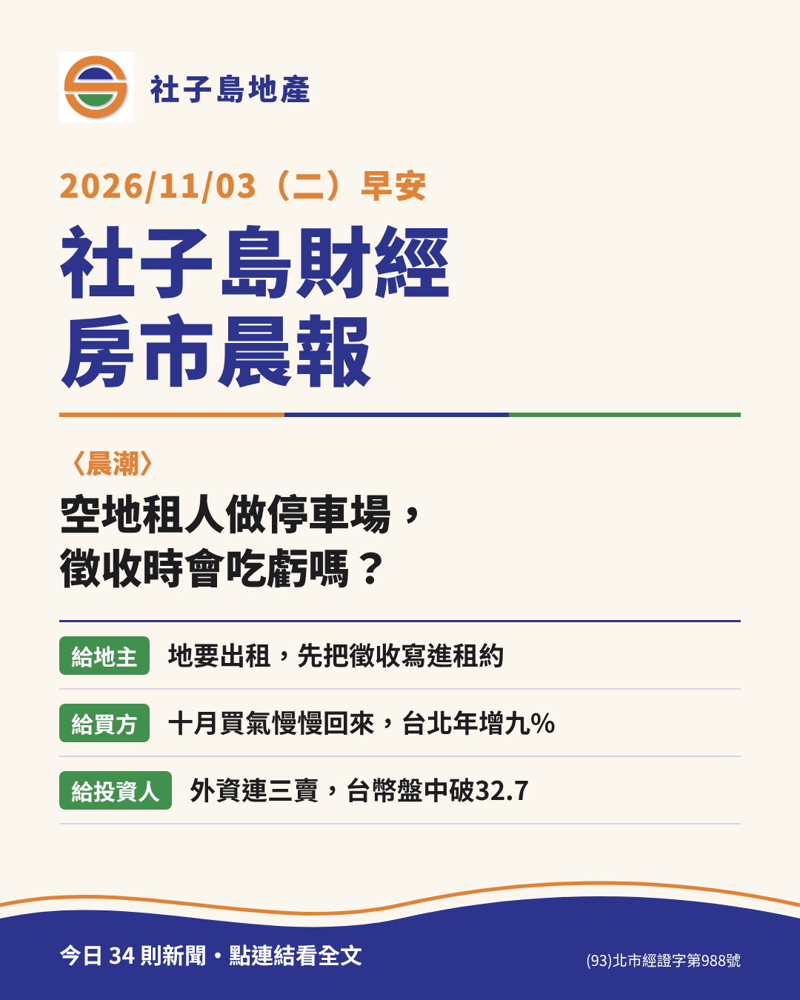

2026/11/03 (二) 早安
社子島財經房市晨報｜空地租人做停車場，徵收時會吃虧嗎？
今日 34 則財經與房市新聞，依主題分成 9 類，社子島、主商圈與台北市的新聞排在最前面。點標題就能開啟原文。
〈潮汐表〉今天的三道潮水
- 給地主空地想租人做停車場，先查使用分區能不能這樣用；租約寫清楚「遇徵收即終止」、承租人不得蓋建物，補償的事就少一半麻煩。
- 給買方10月六都買賣移轉年增3.4%，前十月由負轉正；台北市年增9.2%，但比9月少了一成，買氣是慢慢回來，不是一下子湧回。
- 給投資人台股失守45,000點，外資連三賣；台幣盤中貶破32.7，央行出手。今晚看蘋果財報與美國期中選舉。
〈晨潮〉
空地租人做停車場，徵收時會吃虧嗎？
昨天阿公在淡水河邊問我們：「前幾工有人來問，欲共這塊地租去做停車場。地租予人，敢會影響以後區段徵收的補償？租約欲按怎寫，才袂予家己麻煩？」今天週二，我們就從這塊空地聊起。
先說結論：出租本身，不會讓地價補償變少。區段徵收的地價，依《土地徵收條例》第30條按徵收當期的市價計算，看的是土地本身，不是誰在用它；地主想領抵價地，也是以土地所有權人的身分申請。換句話說，地租出去，地還是您的，權利不會因為一張租約就換人。
真正會惹麻煩的，是地上多出來的東西。承租人若鋪了柏油、搭了車棚、裝了收費機，這些地上物屬於誰、補償給誰、徵收時誰負責拆，租約沒寫，就容易各說各話。而且徵收公告之後，依同條例第35條，土地上不得再新建、增建，也不能變更地形；社子島許多土地還在限制發展的狀態，連「能不能做停車場」本身，都要先查使用分區、看是否需要申請臨時使用，否則被裁罰的可能是地主。
所以租約我們建議至少寫清楚五件事：用途只做平面停車場、不得興建任何建物；租期短一點，一年一約；土地遇徵收、重劃或政府通知時，契約當然終止，承租人不得請求補償；地上物由承租人自行拆除、回復原狀；不得轉租。另外要避免寫成耕作用的租約，耕地租約在徵收時另有分配補償的規定，和停車場是兩回事。實際適用以地政局與法院見解為準，簽約前歡迎拿來給我們看一遍。
停車場租約，五件事先寫清楚
- ① 用途：限平面停車場，不得興建建物或工作物。② 租期：短期、一年一約。
- ③ 徵收條款：遇區段徵收、重劃或政府通知，契約當然終止，承租人不得向出租人或政府請求補償。
- ④ 地上物：由承租人自行拆除、回復原狀。⑤ 不得轉租。並先查使用分區、是否需申請臨時使用；避免寫成耕地租約。
市場這頭，十月六都買賣移轉年增3.4%，前十月由負轉正，買氣是慢慢回來；台股則失守45,000點，外資連三賣，台幣盤中貶破32.7。租補、地價稅與徵收補償救濟的相關報導，都整理在「稅務與法律實務」裡，往下滑就能看到。
——社子島地產團隊
主商圈：社子島・北士科・關渡洲美平原3 則
社子島這兩天沒有新的審議進度，附上內政部審議的回顧；北士科帶動北投預售量連兩年居北市第一
台北市2 則
有人提議大台北行政區以淡水河為界重劃，社子島正好在河的這一邊
市地重劃・區段徵收2 則
台南永大重劃計畫核定；嘉義市說明地主負擔不一定是45%
房市走向7 則
10月六都移轉年增3.4%、前十月由負轉正；台北市年增9.2%，但比9月少了一成
土地・產業用地3 則
台南標售地籍清理土地47標，11月19日開標
都更・老屋1 則
內政部老宅延壽修繕補助，金門11/4起受理
稅務與法律實務6 則
地要出租、遇到徵收補償有爭議，該注意什麼？今天〈晨潮〉回答阿公，租賃與徵收的相關報導在這裡
高齡與人口2 則
以房養老新增件數放緩；長輩住進養老院，家人的陪伴怎麼安排
今日財經大事8 則
台股失守45,000點、外資連三賣；台幣盤中貶破32.7，央行出手
〈阿公講古〉
週二早上，阿公沿著基隆河走，河面平平的，對岸北士科的工地吊車已經轉起來，幾隻白鷺鷥站在水邊，一動也不動。
「原來租約寫予清楚，就毋驚。」他點點頭：「早前阮庄頭嘛有人把地租予人放砂石，後來欲收轉來，吵到村長出面。紙寫予明，人情才袂歹。」
他說年輕時，基隆河還沒截彎取直，河道彎彎曲曲，大水一來，田就泡在水裡好幾天。「彼陣仔，阮看天食飯；這馬，阮看公文食飯。」說完自己笑了起來。
走到堤防的轉角，他從口袋拿出一張通知單：「里長講，以後區段徵收，會分抵價地予阮。毋過阮有好幾个兄弟仔共有這塊地，抵價地是逐家分開領，抑是愛做伙領？若是兄弟意見無仝，欲按怎？」
阿公的問題，我們明天回答。
〈廟口泡茶區〉
阿公講完古，從河邊走回廟口，榕樹下的茶已經泡好了。家裡的地要不要租、要怎麼租，都可以先坐下來慢慢說。
土地出租，租金只是一半，另一半是租約：用途、期限、遇到徵收怎麼辦，我們陪您一條一條寫清楚。
想問問您：您家的地或房子，有沒有出租過？最讓您頭痛的是租金、房客，還是租約？打個電話告訴我們，下次泡茶時一起聊。
不急著成交。我們是守在堤邊的人，守著每一塊土地的權益，直到把它交到願意耕耘它的人手上。
📞 歡迎先來電 0922-252-969先通個電話聊聊，再約時間來廟口喝茶。
 掃描 QR code，加 LINE 好友LINE ID：@shezidao💬 加 LINE
掃描 QR code，加 LINE 好友LINE ID：@shezidao💬 加 LINE
社子島地產團隊｜service@shezidao.com.tw
台北市士林區延平北路九段288號
週一至週六 9:30–18:00（週四 9:30–13:30），週日公休📞 來電 0922-252-969
本站由社子島地產開發有限公司經營，為民間不動產資訊網站，非臺北市政府官方網站；政府公告請以臺北市政府與地政局網站為準。
本期新聞由社子島地產團隊自經濟日報、聯合新聞網、自由時報、中時新聞網、工商時報、公視新聞網、ETtoday、蕃新聞、風傳媒、住展雜誌、司法院 等媒體收集，標題照原文，點擊即可開啟原始報導；法規說明僅供參考，實際權利義務以主管機關公告為準。〈晨潮〉〈阿公講古〉為本團隊之參考意見，不構成投資建議，亦不代表支持任何候選人。〈阿公講古〉的阿公，是我們依島上長輩的身影寫成的人物。